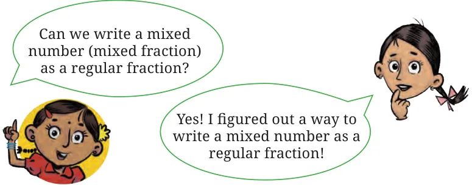
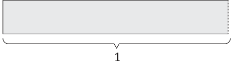

<!DOCTYPE html>
<html lang="en">
<head>
<meta charset="UTF-8">
<meta name="viewport" content="width=device-width,initial-scale=1">
<title>Figure it Out; 7.6 Equivalent Fractions — Fractions</title>
<meta name="description" content="Class 6 Mathematics · Fractions · Figure it Out; 7.6 Equivalent Fractions">
<link rel="icon" href="data:image/svg+xml,<svg xmlns='http://www.w3.org/2000/svg' viewBox='0 0 100 100'><text y='.9em' font-size='90'>📘</text></svg>">
<link rel="stylesheet" href="../../../assets/book.css">
<link rel="stylesheet" href="https://cdn.jsdelivr.net/npm/katex@0.16.11/dist/katex.min.css" crossorigin="anonymous">
</head>
<body>
<header class="topbar">
<div class="topbar-in">
  <div class="crumb">
    <span class="c1"><a href="../../../index.html">Library</a> · <a href="../../index.html">Class 6 Mathematics</a></span>
    <span class="c2">Fractions · Figure it Out; 7.6 Equivalent Fractions</span>
  </div>
  <a class="tb-btn" data-nav="prev" href="../../07-fractions/12-figure-it-out/index.html" title="Figure it Out">←</a>
  <details class="drawer"><summary class="tb-btn" title="Sections in this chapter">☰</summary>
<div class="drawer-panel"><div class="dh">Fractions</div><a href="../01-chapter-opener/index.html">Chapter opener</a><a href="../02-fractional-units-and-equal-shares-7.1/index.html">7.1 Fractional Units and Equal Shares</a><a href="../03-figure-it-out/index.html">Figure it Out</a><a href="../04-fractional-units-as-parts-of-a-whole-7.2/index.html">7.2 Fractional Units as Parts of a Whole</a><a href="../05-figure-it-out/index.html">Figure it Out</a><a href="../06-measuring-using-fractional-units-7.3/index.html">7.3 Measuring Using Fractional Units</a><a href="../07-figure-it-out/index.html">Figure it Out</a><a href="../08-marking-fraction-lengths-on-the-number-line-7.4/index.html">7.4 Marking Fraction Lengths on the Number Line</a><a href="../09-figure-it-out/index.html">Figure it Out</a><a href="../10-mixed-fractions-7.5/index.html">7.5 Mixed Fractions</a><a href="../11-figure-it-out/index.html">Figure it Out</a><a href="../12-figure-it-out/index.html">Figure it Out</a><a href="../13-figure-it-out/index.html" aria-current="page">Figure it Out; 7.6 Equivalent Fractions</a><a href="../14-figure-it-out/index.html">Figure it Out</a><a href="../15-figure-it-out/index.html">Figure it Out</a><a href="../16-figure-it-out/index.html">Figure it Out</a><a href="../17-figure-it-out/index.html">Figure it Out</a><a href="../18-figure-it-out/index.html">Figure it Out; 7.7 Comparing Fractions</a><a href="../19-figure-it-out/index.html">Figure it Out</a><a href="../20-addition-and-subtraction-of-fractions-7.8/index.html">7.8 Addition and Subtraction of Fractions</a><a href="../21-figure-it-out/index.html">Figure it Out</a><a href="../22-figure-it-out/index.html">Figure it Out</a><a href="../23-figure-it-out/index.html">Figure it Out</a><a href="../24-a-pinch-of-history-7.9/index.html">7.9 A Pinch of History</a><a href="../25-solutions/index.html">CHAPTER 7 — SOLUTIONS</a></div></details>
  <a class="tb-btn" data-nav="next" href="../../07-fractions/14-figure-it-out/index.html" title="Figure it Out">→</a>
  <button class="tb-btn" data-theme-toggle title="Toggle light / dark" aria-label="Toggle light or dark theme">◐</button>
</div>
<div class="progress"><span style="width:61.3%"></span></div>
</header>
<main class="wrap">
<div class="sec-head">
  <p class="eyebrow"><a href="../index.html">Chapter 7 · Fractions</a></p>
  <h1>Figure it Out; 7.6 Equivalent Fractions</h1>
  <p class="sec-meta">Textbook pages 13–15 · 9 figures</p>
</div>
<article class="prose">
<figure class="fig"></figure>
<p>Jaya: When I have \(3 + \frac{3}{4}\) , this means \(1 + 1 + 1 + \frac{3}{4}\) . I know</p>
<p>\(1 = \frac{1}{4} + \frac{1}{4} + \frac{1}{4} + \frac{1}{4}\) .</p>
<p>So I get ( \(\frac{1}{4} + \frac{1}{4} + \frac{1}{4} + \frac{1}{4}\) ) + ( \(1_{4} + \frac{1}{4} + \frac{1}{4} + \frac{1}{4}\) ) + ( \(1_{4} + \frac{1}{4} + \frac{1}{4} + \frac{1}{4}\) ) + ( \(1_{4} + \frac{1}{4} + \frac{1}{4}\) ) \(= \frac{15}{4}\) . Therefore, \((4 \times \frac{1}{4}\) ) \(+ (4 \times \frac{1}{4}\) ) \(+ (4 \times \frac{1}{4}\) ) \(+ (3 \times \frac{1}{4}\) ) \(= \frac{15}{4}\) .</p>
<h4 class="callout-h" id="s-figure-it-out">Figure it Out</h4>
<p>Write the following mixed numbers as fractions:</p>
<figure class="fig side-fig"></figure>
<ul class="qlist">
<li><span class="mk">a.</span><span class="lt">\(3 \frac{1}{4} b\). \(7 \frac{2}{3} c\). \(9 \frac{4}{9}\)</span></li>
<li><span class="mk">d.</span><span class="lt">\(3 \frac{1}{6} e\). \(2 \frac{3}{11} f\). \(3 \frac{9}{10}\)</span></li>
</ul>
<h2 id="s-7-6-equivalent-fractions">7.6 Equivalent Fractions</h2>
<h3 id="s-using-a-fraction-wall-to-find-equal-fractional-lengths">Using a fraction wall to find equal fractional lengths!</h3>
<p>In the previous section, you used paper folding to represent various fractions using fractional units. Let us do some more activities with the same paper strips.</p>
<figure class="fig table-fig"></figure>
<figure class="fig side-fig"></figure>
<figure class="fig table-fig"></figure>
<p>\(\frac{1}{2}\) • Are the lengths \(\frac{1}{2}\) and \(\frac{2}{4}\) equal?</p>
<ul class="qlist">
<li><span class="mk">•</span><span class="lt">Are the lengths \(\frac{2}{4}\) and \(\frac{4}{8}\) equal?</span></li>
</ul>
<figure class="fig table-fig"></figure>
<aside class="sidenote"><p>We can say that \(\frac{1}{2} = \frac{2}{4} = \frac{4}{8}\) .</p></aside>
<div class="mathblock"><p>\(\frac{2}{4}\)</p></div>
<figure class="fig table-fig"></figure>
<div class="mathblock"><p>\(\frac{4}{8}\)</p></div>
<p>These are ‘equivalent fractions’ that denote the same length, but they are expressed in terms of different fractional units. Now, check whether \(\frac{1}{3}\) and \(\frac{2}{6}\) are equivalent fractions or not, using paper strips. Make your own fraction wall using such strips as given in the picture below! Answer the following questions after looking at the fraction wall:</p>
<ul class="qlist">
<li><span class="mk">1.</span><span class="lt">Are the lengths \(\frac{1}{2}\) and \(\frac{3}{6}\) equal?</span></li>
<li><span class="mk">2.</span><span class="lt">Are \(\frac{2}{3}\) and \(\frac{4}{6}\) equivalent 1 UNIT</span></li>
</ul>
<p>fractions? Why? \(\frac{1}{2} \frac{2}{2}\)</p>
<ul class="qlist">
<li><span class="mk">3.</span><span class="lt">How many pieces of \(\frac{1}{4} \frac{1}{3} \frac{2}{4} \frac{2}{3} \frac{3}{4} \frac{3}{3} \frac{4}{4}\)</span></li>
</ul>
<p>length \(\frac{1}{6}\) will make \(a \frac{1}{5} \frac{2}{5} \frac{3}{5} \frac{4}{5} \frac{5}{5}\) length of \(\frac{1}{2}\) ? \(\frac{1}{6} \frac{2}{6} \frac{3}{6} \frac{4}{6} \frac{5}{6} \frac{6}{6}\)</p>
<ul class="qlist">
<li><span class="mk">4.</span><span class="lt">How many pieces of length \(\frac{1}{6}\) will make a length of \(\frac{1}{3}\) ?</span></li>
</ul>
<p>We can extend this idea to make a fraction wall up to the fractional unit \(\frac{1}{10}\) . (This fraction wall is given at the end of the book.)</p>
<div class="mathblock"><p>\(\frac{1}{2} \frac{2}{2}\)</p></div>
<p>\(\frac{1}{3} \frac{2}{3} \frac{3}{3} \frac{1}{4} \frac{2}{4} \frac{3}{4} \frac{4}{4} \frac{1}{5} \frac{2}{5} \frac{3}{5} \frac{4}{5} \frac{5}{5} \frac{1}{6} \frac{2}{6} \frac{3}{6} \frac{4}{6} \frac{5}{6} \frac{6}{6} \frac{1}{7} \frac{2}{7} \frac{3}{7} \frac{4}{7} \frac{5}{7} \frac{6}{7} \frac{1}{7} \frac{1}{8} \frac{2}{8} \frac{3}{8} \frac{4}{8} \frac{5}{8} \frac{6}{8} \frac{7}{8} \frac{8}{8} \frac{1}{9} \frac{2}{9} \frac{3}{9} \frac{4}{9} \frac{5}{9} \frac{6}{9} \frac{7}{9} \frac{8}{9} \frac{9}{9} \frac{1}{10} \frac{2}{10} \frac{3}{10} \frac{4}{10} \frac{5}{10} \frac{6}{10} \frac{7}{10} \frac{8}{10} \frac{9}{10} \frac{10}{10}\)</p>
</article>
<nav class="pager"><a class="" data-nav="prev" href="../../07-fractions/12-figure-it-out/index.html"><span class="dir">← Previous</span><span class="t">Figure it Out</span><span class="ch">Fractions</span></a><a class="nx" data-nav="next" href="../../07-fractions/14-figure-it-out/index.html"><span class="dir">Next →</span><span class="t">Figure it Out</span><span class="ch">Fractions</span></a></nav>
</main><footer class="site">Generated from the source textbook PDFs · text, figures and exercises belong to their respective publishers.</footer><script defer src="https://cdn.jsdelivr.net/npm/katex@0.16.11/dist/katex.min.js" crossorigin="anonymous"></script>
<script defer src="https://cdn.jsdelivr.net/npm/katex@0.16.11/dist/contrib/auto-render.min.js" crossorigin="anonymous"
  onload="renderMathInElement(document.body,{delimiters:[
    {left:'\\(',right:'\\)',display:false},
    {left:'$$',right:'$$',display:true},
    {left:'\\[',right:'\\]',display:true}],throwOnError:false,ignoredTags:['script','noscript','style','textarea','pre','code']})"></script>
<script src="../../../assets/book.js"></script>
<script defer src="../../../../assets/search.js?v=1789782769"></script>
<script defer src="../../../../assets/screenshot.js?v=1789782769"></script>
</body>
</html>
